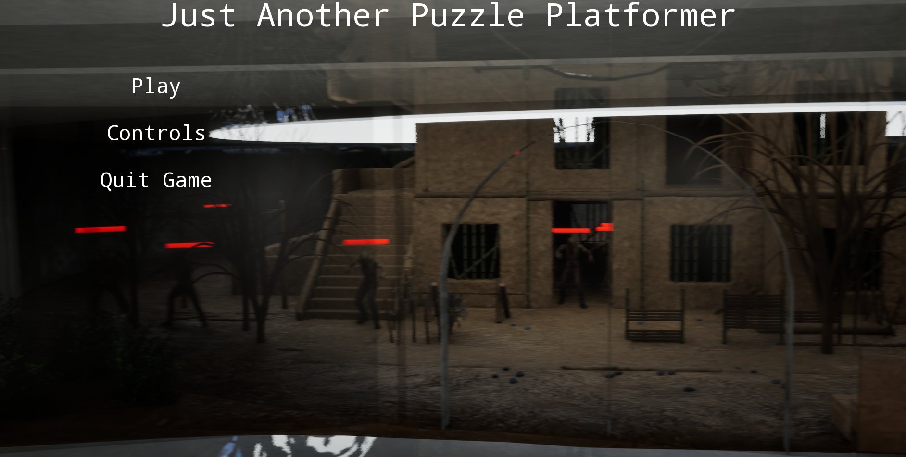

PROJECT 001 · IN DEVELOPMENT
Just Another Puzzle Platformer

This game is a puzzle platformer where breaking the rules is part of the solution. Players are encouraged and sometimes required to exploit mechanics use literal cheats and find unexpected ways to progress in the game.
Unreal Engine Blueprints UI Design Level DesignMy contributions
I developed all the game mechanics, UI using Blueprints, I designed all the levels, I used models and textures from the Fab store to develop the environments and take the project beyond the greybox stage.